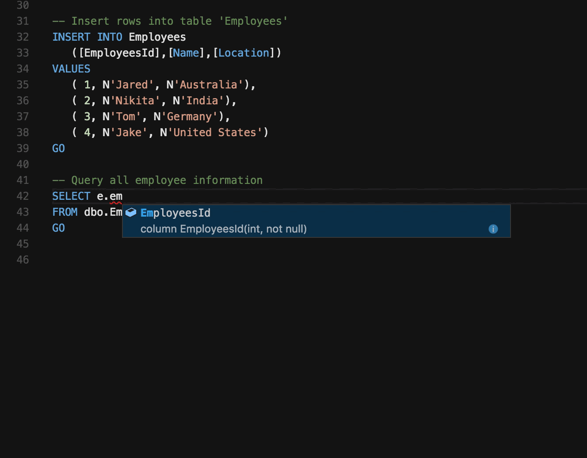
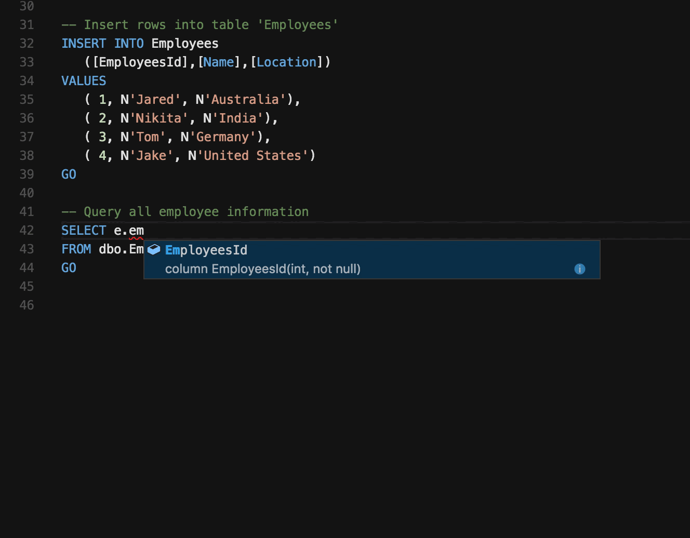

What do I know as a software developer?


HTML - (Hyper Text Markup Language)
HTML (HyperText Markup Language) is the most basic building block of the Web. It defines the meaning and structure of web content. Other technologies besides HTML are generally used to describe a web page's appearance/presentation (CSS) or functionality/behavior (JavaScript).
"Hypertext" refers to links that connect web pages to one another, either within a single website or between websites. Links are a fundamental aspect of the Web. By uploading content to the Internet and linking it to pages created by other people, you become an active participant in the World Wide Web.
Resources that I used to learn HTML more

CSS - (Cascading Style Sheet)
Stands for "Cascading Style Sheet." Cascading style sheets are used to format the layout of Web pages. They can be used to define text styles, table sizes, and other aspects of Web pages that previously could only be defined in a page's HTML. CSS helps Web developers create a uniform look across several pages of a Web site.
Resources that I used to learn coding CSS more


Javascript script Language
avaScript is a cross-platform, object-oriented scripting language used to make webpages interactive (e.g., having complex animations, clickable buttons, popup menus, etc.). There are also more advanced server side versions of JavaScript such as Node.js, which allow you to add more functionality to a website than simply downloading files (such as realtime collaboration between multiple computers). Inside a host environment (for example, a web browser), JavaScript can be connected to the objects of its environment to provide programmatic control over them. JavaScript contains a standard library of objects, such as Array, Date, and Math, and a core set of language elements such as operators, control structures, and statements.
Resources that I used to learn coding JavaScript more

Python - (Hyper Text Markup Language)
Python is an interpreted, object-oriented, high-level programming language with dynamic semantics. Its high-level built in data structures, combined with dynamic typing and dynamic binding, make it very attractive for Rapid Application Development, as well as for use as a scripting or glue language to connect existing components together. Python's simple, easy to learn syntax emphasizes readability and therefore reduces the cost of program maintenance. Python supports modules and packages, which encourages program modularity and code reuse. The Python interpreter and the extensive standard library are available in source or binary form without charge for all major platforms, and can be freely distributed.

Flask fram work
Flask DocumentationFlask is a web framework. This means flask provides you with tools, libraries and technologies that allow you to build a web application. This web application can be some web pages, a blog, a wiki or go as big as a web-based calendar application or a commercial website. Flask is part of the categories of the micro-framework. Micro-framework are normally framework with little to no dependencies to external libraries.
 

SQL - (Hyper Text Markup Language)
Structured Query Language (SQL) is the standard language for data manipulation in a DBMS. In in simple words its used to talk to the data in a DBMS. Following are types of SQL Statements
Data Definition Language (DDL) allows you to create objects like Schemas, Tables in the database
Data Control Language (DCL) allows you to manipulate and manage access rights on database objects
Data Manipulation Language (DML) is used for searching, inserting, updating, and deleting data, which will be partially covered in this programming tutorial.
PHP programming language
PHP DocumentationPHP started out as a small open source project that evolved as more and more people found out how useful it was. Rasmus Lerdorf unleashed the first version of PHP way back in 1994.
PHP is a recursive acronym for "PHP: Hypertext Preprocessor".
PHP is a server side scripting language that is embedded in HTML. It is used to manage dynamic content, databases, session tracking, even build entire e-commerce sites.
It is integrated with a number of popular databases, including MySQL, PostgreSQL, Oracle, Sybase, Informix, and Microsoft SQL Server.
Algorithm
Leet CodeAn algorithm is a set of instructions designed to perform a specific task. This can be a simple process, such as multiplying two numbers, or a complex operation, such as playing a compressed video file. Search engines use proprietary algorithms to display the most relevant results from their search index for specific queries.